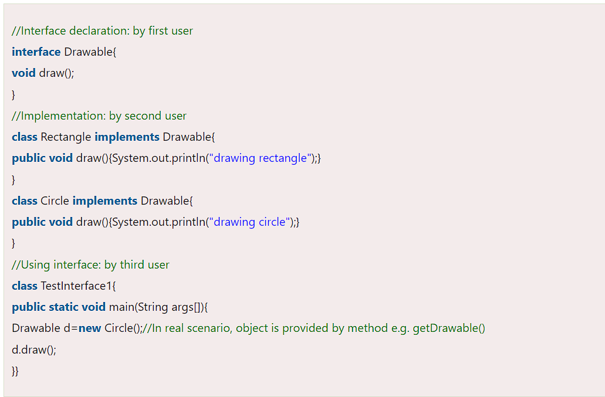

Interfaces are another way of achieving abstraction in Java. An interface is a collection of abstract methods and constants, similar to an abstract class. However, an interface can only have abstract methods and constants, and it cannot contain any implementation code. An interface can be thought of as a contract between the interface and the class that implements it, as the implementing class must provide implementations for all the methods defined in the interface.
Example of an Interface in Java
Here is an example of an interface in Java:
public interface Shape
{
double getArea();
double getPerimeter();
}
The Shape interface defines two abstract methods, getArea() and getPerimeter(). Any class that implements the Shape interface must provide implementations for these methods.
Benefits of Using Interfaces in Java
Using interfaces in Java has several benefits, including:
- Facilitating loose coupling between objects
- Enforcing consistency in the classes that implement the interface
- Providing a way to define a contract between a class and the outside world
Java Interface Example: Bank
Let's see another example of java interface which provides the implementation of Bank interface.
File: TestInterface2.java
interface Bank{
float rateOfInterest();
}
class SBI implements Bank{
public float rateOfInterest(){return 9.15f;}
}
class PNB implements Bank{
public float rateOfInterest(){return 9.7f;}
}
class TestInterface2{
public static void main(String[] args){
Bank b=new SBI();
System.out.println("ROI: "+b.rateOfInterest());
}
}
Implementing an Interface in Java
In this example, the Drawable interface has only one method. Its implementation is provided by Rectangle and Circle classes.
In a real scenario, an interface is defined by someone else, but its implementation is provided by different implementation providers. Moreover, it is used by someone else. The implementation part is hidden by the user who uses the interface.
Multiple inheritance in Java by interface
Here is an example of an interface in Java:
interface Printable
{
void print();
}
interface Showable{
void show();
}
class A7 implements Printable,Showable{
public void print(){System.out.println("Hello");}
public void show(){System.out.println("Welcome");}
public static void main(String args[]){
A7 obj = new A7();
obj.print();
obj.show();
}
}
The Shape interface defines two abstract methods, getArea() and getPerimeter(). Any class that implements the Shape interface must provide implementations for these methods.
Default Method in Interface
we can have method body in interface. But we need to make it default method. Let's see an example:
File: TestInterfaceDefault.java
interface Drawable{
void draw();
default void msg(){System.out.println("default method");}
}
class Rectangle implements Drawable{
public void draw(){System.out.println("drawing rectangle");}
}
class TestInterfaceDefault{
public static void main(String args[]){
Drawable d=new Rectangle();
d.draw();
d.msg();
}
}
OUTPUT:
drawing rectangle
default method
Static Method in Interface
we can have static method in interface. Let's see an example:
File: TestInterfaceStatic.java
interface Drawable{
void draw();
static int cube(int x){return x*x*x;}
}
class Rectangle implements Drawable{
public void draw(){System.out.println("drawing rectangle");}
}
class TestInterfaceStatic{
public static void main(String args[]){
Drawable d=new Rectangle();
d.draw();
System.out.println(Drawable.cube(3));
}
}
OUTPUT:
drawing rectangle
default method
Nested Interface in Java
Note: An interface can have another interface which is known as a nested interface. We will learn it in detail in the nested classes chapter. For example:
File: Nayan.java
class Animal {
interface Activity {
void move();
}
}
class Dog implements Animal.Activity {
public void move() {
System.out.println("Dogs can walk and run");
}
}
public class Tester {
public static void main(String args[]) {
Dog dog = new Dog();
dog.move();
}
}
OUTPUT:
Dogs can walk and run